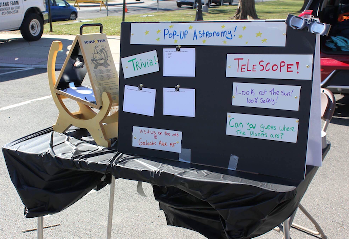
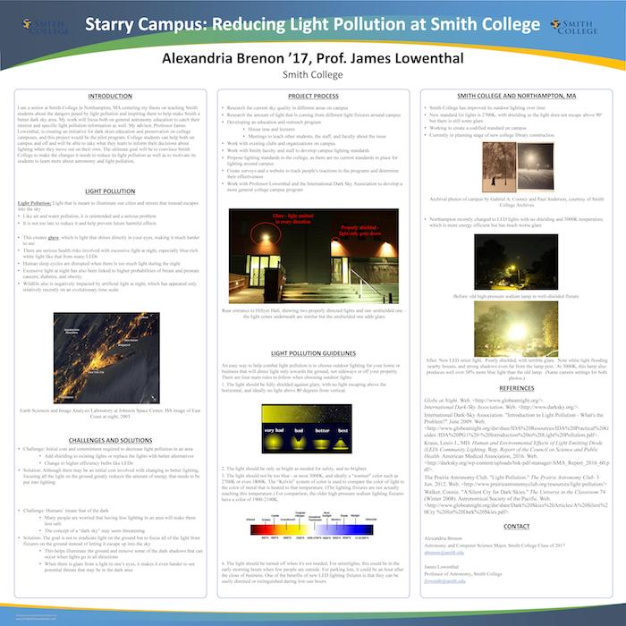
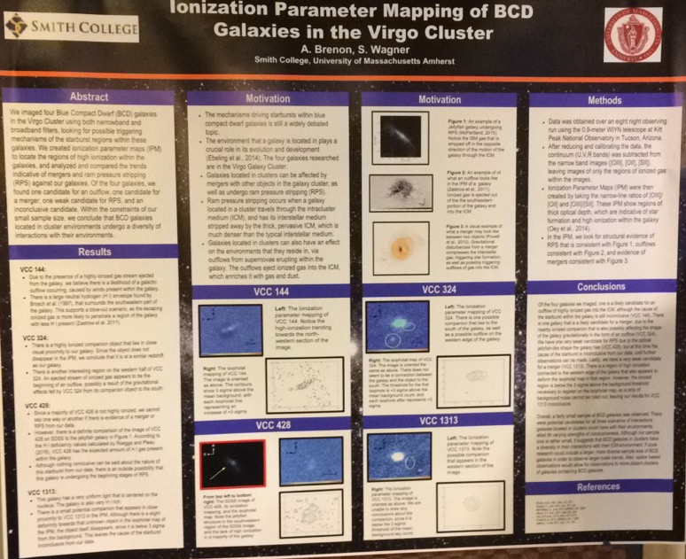

***
NOTE: This site is undergoing active development. The content is accurate but styling and setup is constantly changing.
***
I'm currently working in IT at Five Colleges, Inc. on the Blended Learning project - incorporating technology into professors' classrooms. One of my main job functions is being the project lead for LangMedia, a website by the Five College Center for the Study of World Languages that provides videos, audios, and other content to help people who want to learn less-commonly-taught languages. We are adding sections that used to be static HTML content to the new dynamic Drupal site.
I really enjoy web development, and I have significant experience with Drupal, HTML (and HTML5), PHP, and CSS, as well as some experience with WordPress and JavaScript. I am very passionate about making the sites I work on completely accessible to all users. In addition, I am developing an interactive website for accessibility education, as I have noticed that many accessibility trainings would be much more effective if they were also interactive.
I am also very interested in astronomy and public outreach. The Pop-Up Astronomy exhibit (featured in the projects section below) is my way of incorporating that into my life now, even though it's not my main job.
I created and designed an interactive exhibit featuring solar observing and hands-on activities to spark curiosity and encourage a lifelong love of astronomy. Along with Elena Marione, I present at the Amherst Farmers' Market every weekend and am hoping to expand in the future.
This page accompanies the Pop-Up Astronomy Exhibit. It has further information about the project as well as the scientific background of the exhibits. The site is built on Wordpress, where I did some custom theming and wrote the content.
I am currently developing an interactive site for accessibility education. I'm using the LMS Opigno, which is built on Drupal. As part of this project, I am developing a new Drupal module, theming the site, and submitting issues on drupal.org related to improving the accessibility of Drupal and Opigno.
I am the project lead on LangMedia Phase 2. We are converting static HTML pages into a Drupal 7 site. I designed the interface, created back-end structure and templates, and scraped data, with my coworkers helping with testing and support.
I created and proposed an outdoor lighting policy for Smith College. I also designed and taught a one-week interterm class that was called "Astronomy and You". In January 2017, I presented at the American Astronomical Society Meeting 229 in Grapevine TX.
 We began with an observing run at Kitt Peak National Observatory. My partner and I used our data for research into the reasons for recent star formation in certain Blue Compact Dwarf galaxies. At the end of the semester, we presented a poster to the Five College Astronomy Department.
I am the Project Lead for LangMedia (featured above in the Projects section). I am also working with a team creating an Omeka S repository for Blended Learning materials. Other duties included assisting in the hiring process for student workers, including conducting interviews and checking references, and creating a short video using Adobe Premiere to help Five College students feel comfortable on the local bus system.
I recieved the STRIDE scholarship from Smith, which was accompanied by an internship opportunity for my first two years of college. I worked with Professor Albert Mosley, formatting online exercises for a logic textbook and creating a website for the textbook. I also assisted in a class's implementation and use of the website. I presented my work at Smith College Celebrating Collaborations both academic years.
I assist with daily museum operations such as answering guest questions about museum information. I also enjoy giving an adjusted version of our tour to guests with mobility issues.
Over the summer, I did an internship for astronomy public outreach at a hiking lodge. I set up telescopes for solar and night observation and led astronomy programs for the general public as well as youth camp groups.
Honors: STRIDE scholarship and research project, Dean's List 2015-16, Elected to Sigma Xi
Back to Top
© Alex Brenon, 2018
{kind=link}